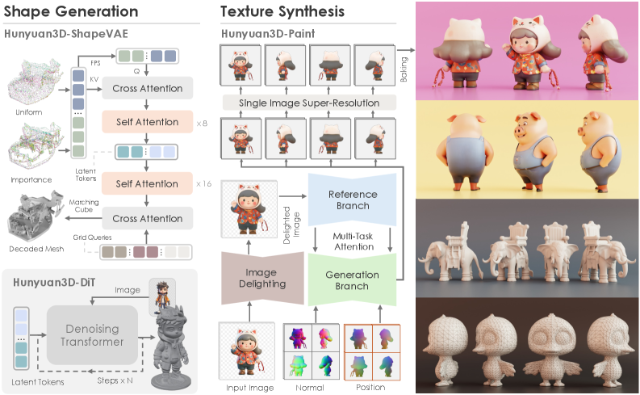
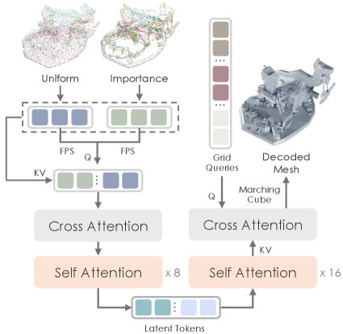
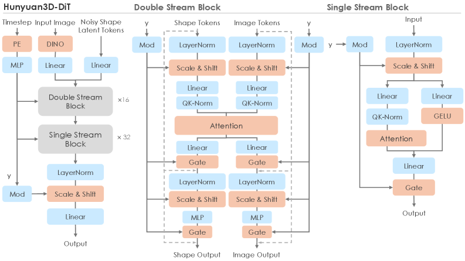
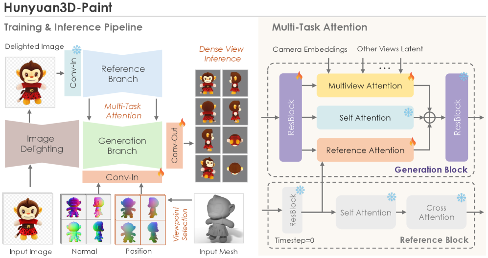
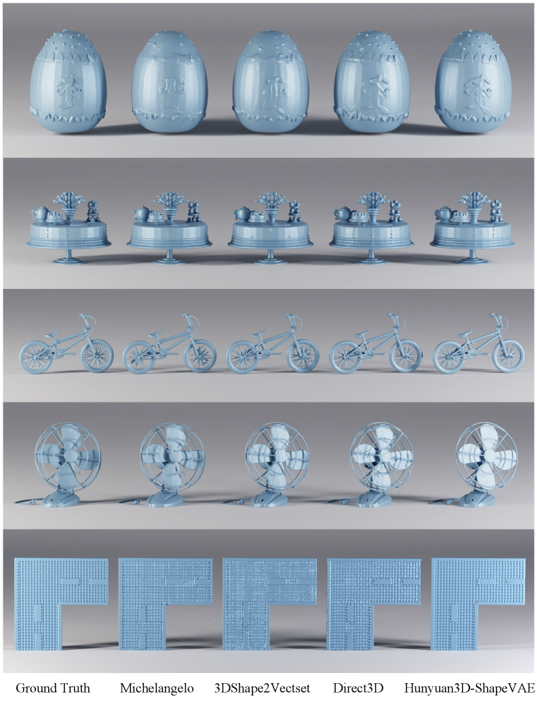
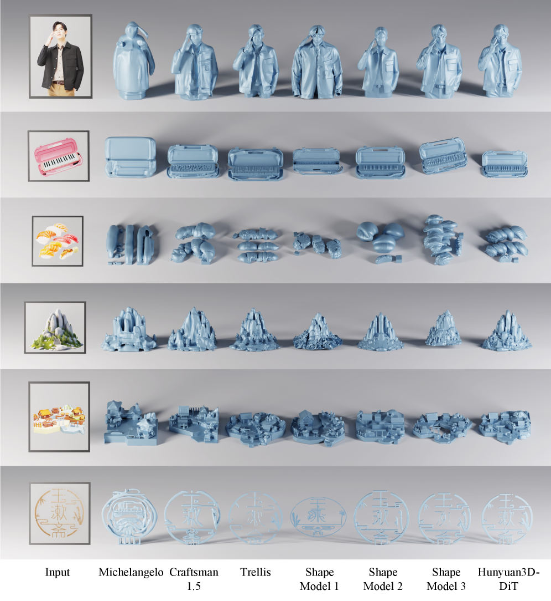
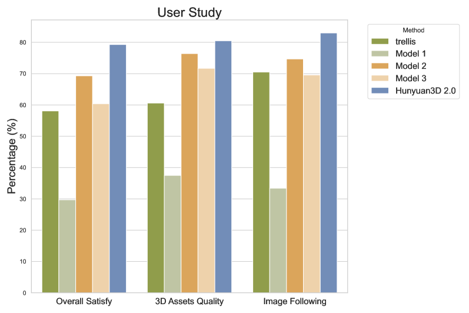

📋 论文概要
Hunyuan3D 2.0 是腾讯推出的大规模 3D 合成系统，专为生成高分辨率纹理 3D 资产设计。系统包含两个基础组件：大规模形状生成模型 (Hunyuan3D-DiT) 和大规模纹理合成模型 (Hunyuan3D-Paint)。在几何细节、条件对齐和纹理质量方面均超越现有 SOTA（包括开源和闭源模型）。
Hunyuan3D 2.1 作为教程案例研究发布，提供了从数据处理到模型训练到评估的完整指南，进一步降低了 3D AIGC 的入门门槛。
🔧 方法 / 架构
Hunyuan3D-DiT (形状生成)
- 架构：基于可扩展的 Flow-based Diffusion Transformer
- 目标：生成与给定条件图像正确对齐的几何形状
- 特点：使用 flow matching 而非传统 DDPM，与 TRELLIS 的 Rectified Flow 思路一致
Hunyuan3D-Paint (纹理合成)
- 目标：为生成或手工制作的网格生成高分辨率、鲜艳的纹理贴图
- 优势：受益于强几何先验和扩散先验，产生高质量纹理
- PBR 支持 (2.1)：2.1 版本扩展支持 PBR (Physically Based Rendering) 材质生成，使资产可用于实际生产管线
Hunyuan3D-Studio
用户友好的生产平台，简化 3D 资产重建过程。允许专业和业余用户操作甚至动画化网格。提供了从生成到后处理的完整工具链。
⭐ 关键特性
| 特性 | 说明 |
|---|---|
| 两阶段管线 | 形状生成 (DiT) → 纹理合成 (Paint)，专业化分工 |
| PBR 材质 (2.1) | 支持物理渲染材质，满足游戏/影视生产需求 |
| 大规模训练 | 大规模 3D 数据集训练，支持高质量生成 |
| 开源生态 | 代码 + 预训练权重完全开源 |
| Production-Ready | 不仅是研究模型，而是面向生产的系统 |
| Hunyuan3D-Omni | 扩展版本支持点云、体素、边界框、骨骼姿态等多模态控制 |
🔬 Hunyuan3D 生态系统
| 版本 | arXiv | 日期 | 核心特性 |
|---|---|---|---|
| Hunyuan3D 2.0 | 2501.12202 | 2025-01-21 | DiT 形状生成 + Paint 纹理合成 |
| Hunyuan3D 2.1 | 2506.15442 | 2025-06-18 | PBR 材质, 教程级完整指南 |
| Hunyuan3D-Omni | 2509.21245 | 2025-09-25 | 多模态控制(点云/体素/边界框/骨骼) |
Hunyuan3D-Omni (arXiv: 2509.21245) 在 2.1 基础上构建统一框架，接受图像之外还支持点云、体素、边界框和骨骼姿态先验作为条件信号，实现几何、拓扑和姿态的精细控制。使用渐进式难度感知采样策略训练。
💡 个人分析
- 两阶段管线 vs 统一模型：Hunyuan3D 选择形状+纹理分离的两阶段管线，与 TRELLIS 的统一 SLAT 形成对比。两阶段的优势是每个组件可以专业化优化，劣势是信息传递可能有损失。实际上两种路线都在收敛——Hunyuan3D-Omni 在向统一靠拢。
- PBR 是生产化关键：2.1 版本加入 PBR 材质支持是重要一步。游戏和影视管线需要 PBR 材质，这使 Hunyuan3D 从研究工具升级为生产工具。
- 腾讯的 3D + 视频双线布局：腾讯同时有 Hunyuan3D（3D 生成）和 HunyuanVideo（视频生成）两条线，体现了在 3D/视频生成领域的系统化投入。两条线在 DiT 架构和 flow matching 方面有技术共享。
- 开源策略的差异化：Hunyuan3D 2.0 号称"填补开源 3D 社区大规模基础生成模型的空白"，这一定位与腾讯在视频生成领域 HunyuanVideo 的开源策略一脉相承——用开源建立生态。
- Hunyuan3D-Omni 的多模态控制：支持骨骼姿态等条件信号是一个独特优势，特别适合角色动画和游戏资产创建场景。渐进式难度感知采样策略确保了多模态融合的鲁棒性。
- 与视频生成调研的关联：HunyuanVideo 1.5 已在本调研索引前序笔记中覆盖。Hunyuan3D 与 HunyuanVideo 共享品牌但属于不同技术线——3D 资产 vs 视频生成。两者未来可能在 4D 生成方向融合。
🖼️ arXiv HTML 论文原图
以下图片从 arXiv HTML 版本直接提取，展示论文原始架构图和结果对比。
Figure 1: Hunyuan3D 2.0 系统总览

Figure 1: Hunyuan3D 2.0 系统总览，展示从输入图像到高质量纹理 3D 资产的完整流程。
Figure 2: 整体架构 — DiT 形状生成 + Paint 纹理合成

Figure 2: 3D 生成整体架构。包含两大组件：Hunyuan3D-DiT 从输入图像生成裸网格，Hunyuan3D-Paint 生成纹理贴图。Paint 接受法线图和位置图作为几何条件，生成多视角图像用于纹理烘焙。
Figure 3: Hunyuan3D-ShapeVAE 架构

Figure 3: ShapeVAE 架构。采用重要性采样策略从网格表面提取高频细节信息（如边缘和角落）。对均匀点云和重要性采样点云分别进行最远点采样 (FPS)。
Figure 4: Hunyuan3D-DiT 详细架构

Figure 4: DiT 采用双流和单流 Transformer 块的架构，促进形状和图像模态间的交互。橙色块无可学习参数，蓝色块含可训练参数，灰色块为更详细的模块。
Figure 5: Hunyuan3D-Paint 纹理合成架构

Figure 5: Paint 架构。使用图像去光模块将输入转为无光状态生成光不变纹理。双流图像条件参考网络提供条件图像特征，多任务注意力模块确保多视角一致性。
Figure 6: ShapeVAE 重建质量对比

Figure 6: 重建网格的视觉对比，Hunyuan3D-ShapeVAE 重建出具有细粒度表面细节和整洁空间的网格。
Figure 7: DiT 形状生成对比

Figure 7: 输入图像和各方法生成的裸网格对比。人脸和钢琴键显示 DiT 能合成精细表面凹凸，场景和徽标展示细节生成能力。
Figure 8: Paint 纹理合成对比

Figure 8: 不同裸网格上的纹理贴图对比。鱼和兔子展示 Paint 产生最符合文本的纹理，足球展示无缝纹理合成。
Figure 9: 纹理换肤结果

Figure 9: 为两个网格生成不同纹理贴图的结果，验证 Paint 的纹理换肤能力。
📐 算法框图 / 💡 创新 / 🎯 应用 / 🏋️ 训练 / 📊 数据 / 📐 损失 / 🔄 演进
核心创新
- 3D-DiT：大规模 3D 扩散 Transformer，文本/图像 → 3D 形状
- 3D-Paint：给定 3D 形状 + 文本/图像 → 纹理贴图
- 双阶段解耦：形状和纹理分开生成，各自优化
- 大规模训练：在 Objaverse-XL 等大规模 3D 数据上训练
训练策略
- 阶段 1：3D-DiT 在大规模 3D 数据上训练形状生成
- 阶段 2：3D-Paint 在形状+纹理配对数据上训练纹理生成
- Flow Matching 损失
损失函数
- 形状生成：L_shape = Flow Matching 损失
- 纹理生成：L_texture = L1 + LPIPS + 对抗损失
应用场景
| 场景 | 具体应用 |
|---|---|
| 游戏开发 | 3D 游戏资产生成 |
| 电商 | 商品 3D 模型 |
| 3D 打印 | 可打印 mesh |
| AR/VR | 3D 内容创建 |